ОКСИЯ: финальная проверка перед заливкой
12.11.2026 · Истории (60 слайдов) и описания 10 товаров · проверено по правилам копирайтинга
Что искали: штампы («индивидуальный подход», «по-настоящему»), «не X, а Y», длинные тире, безличные обороты, канцелярит, висячие слова, фразы, которые живой человек так не скажет, и факты без источника. Цены, адрес, телефон и условия не менялись. Всё, что было словами Натальи (стоимость, продлёнка, «лучшие гимназии»), оставлено.
1. Истории: что поправлено
Слева было, в центре стало. Остальные 48 слайдов прошли проверку без правок.
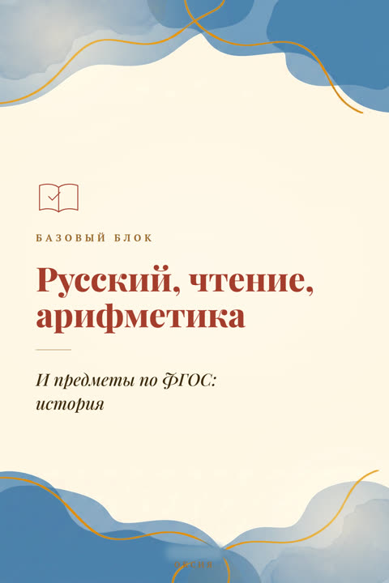
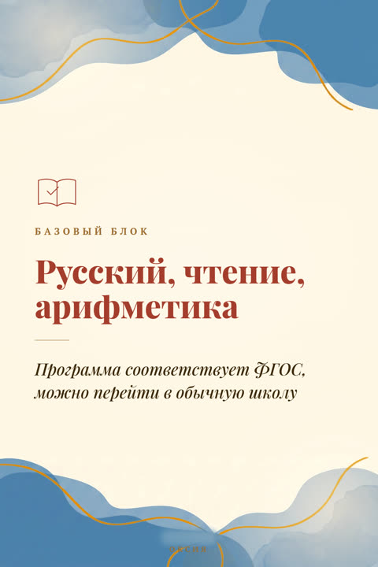
И предметы по ФГОС: история
Программа соответствует ФГОС, можно перейти в обычную школу
Фраза оборвалась: после удаления «церковнославянского» остался один предмет. Взяли факт из описания школы.
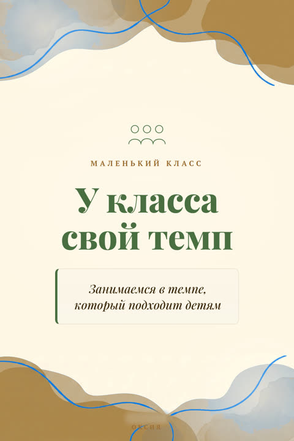
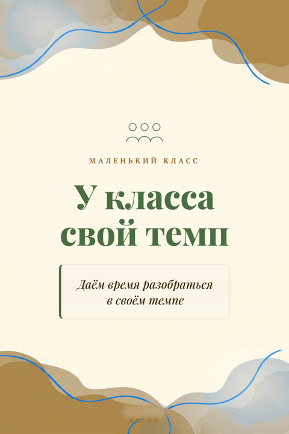
Занимаемся в темпе, который подходит детям
Даём время разобраться в своём темпе
Заголовок «У класса свой темп» повторялся в подписи. Теперь подпись говорит, что делает школа.
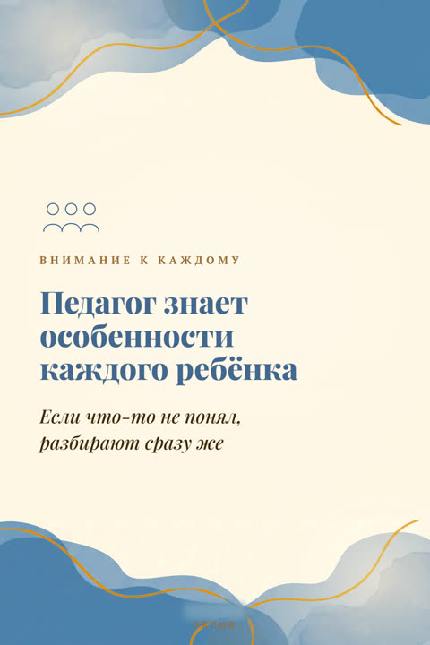
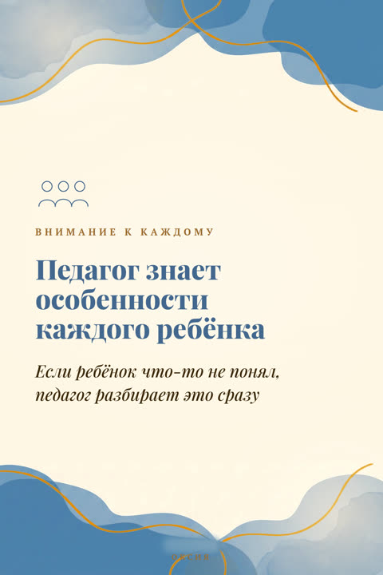
Если что-то не понял, разбирают сразу же
Если ребёнок что-то не понял, педагог разбирает это сразу
Безличное «разбирают», не было, кто действует.
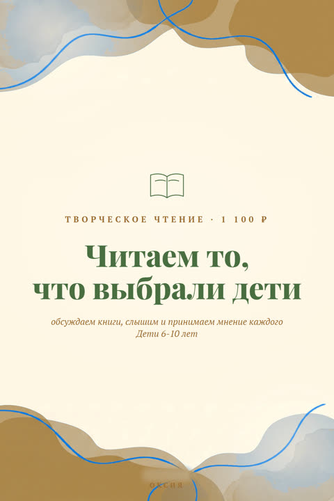
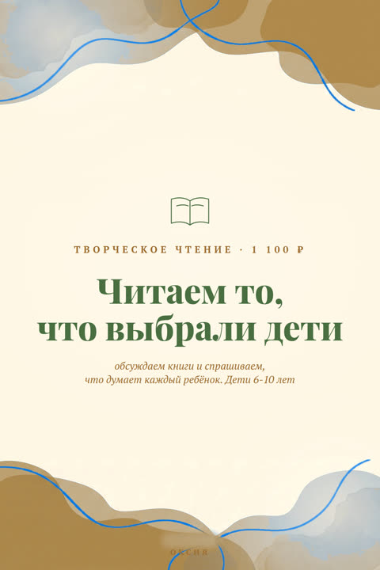
обсуждаем книги, слышим и принимаем мнение каждого
обсуждаем книги и спрашиваем, что думает каждый ребёнок
Канцелярит «слышим и принимаем мнение». Теперь действие, как в описании товара.
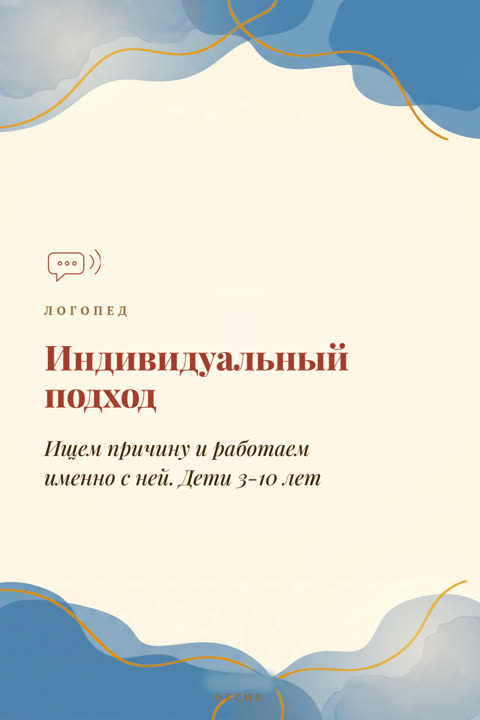
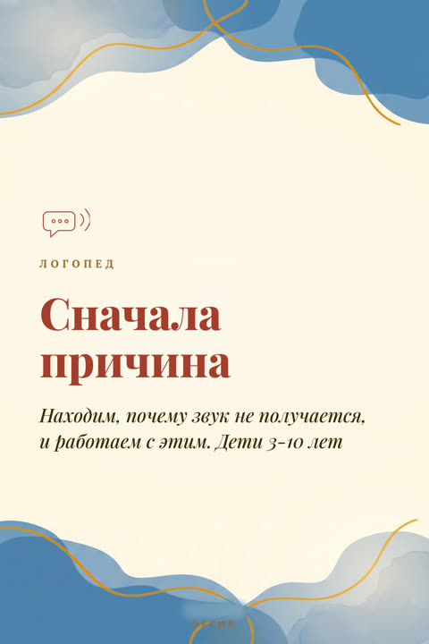
Индивидуальный подход. Ищем причину и работаем именно с ней
Сначала причина. Находим, почему звук не получается, и работаем с этим
«Индивидуальный подход» в стоп-листе. Заголовок и подпись повторяли одно и то же.
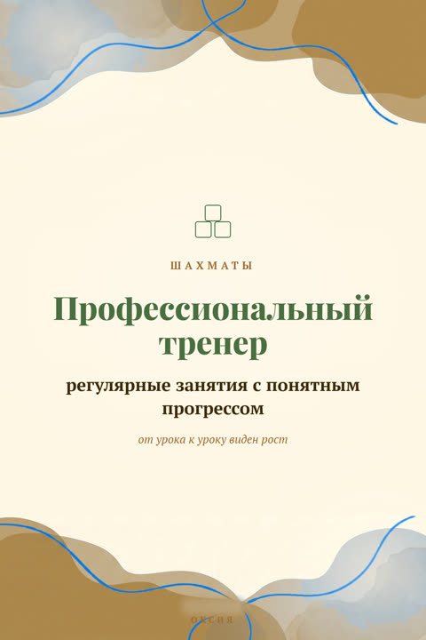
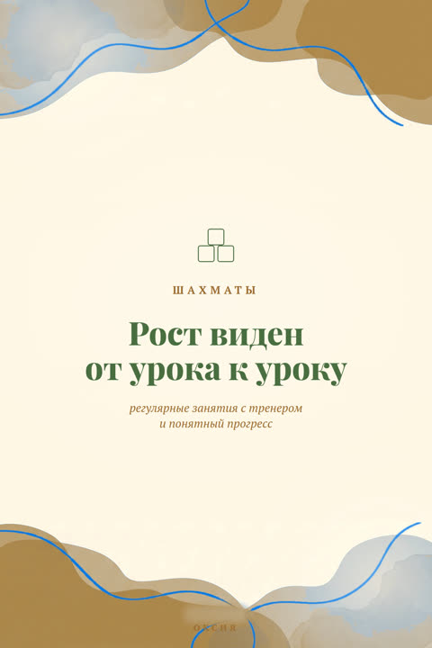
Профессиональный тренер. Регулярные занятия с понятным прогрессом. От урока к уроку виден рост
Регулярные занятия с тренером. Прогресс ребёнка виден от урока к уроку
«Профессиональный» это оценка без факта. «Рост» читался и как рост ребёнка в сантиметрах. Слово «прогресс» не повторяется в соседних строках.
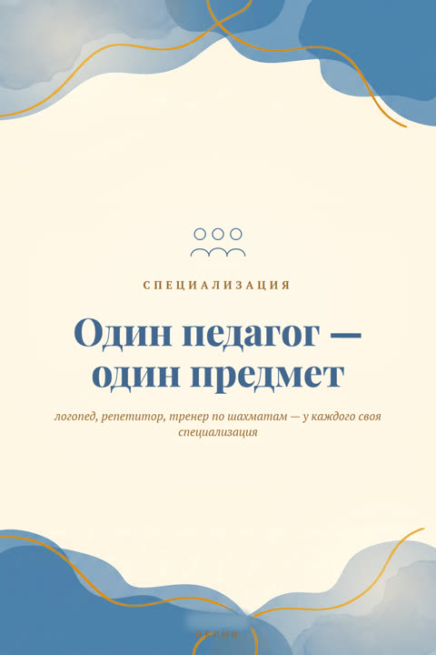
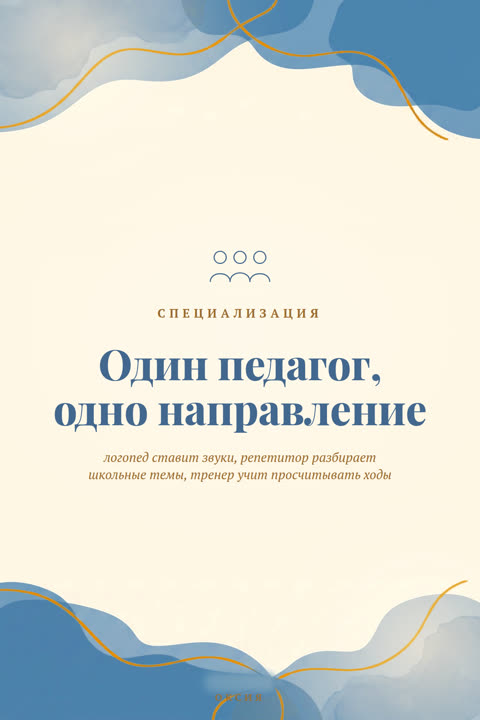
Один педагог — один предмет. У каждого своя специализация
Один педагог, одно направление. Логопед ставит звуки, репетитор разбирает школьные темы, тренер учит просчитывать ходы
Два длинных тире убраны; вместо общих слов «специализация» названо, что делает каждый. «Тренер по шахматам учит шахматам» было пустой фразой.
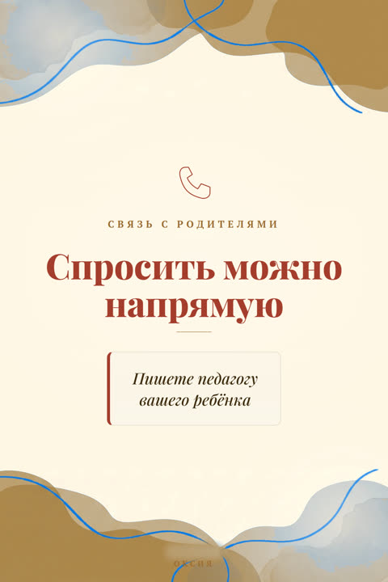
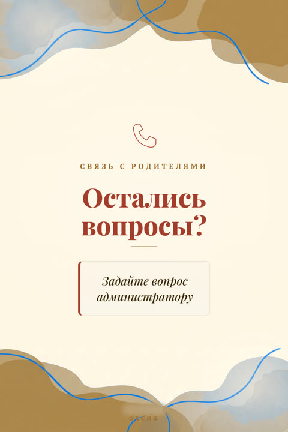
Спросить можно напрямую. Пишете педагогу вашего ребёнка
Остались вопросы? Напишите администратору
Родители пишут администратору, не педагогу. «Вопросы» и «вопрос» рядом не повторяются.
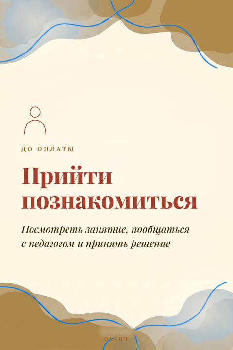
Посмотреть занятие, пообщаться с педагогом и принять решение
Посмотрите занятие, поговорите с педагогом и примите решение
Список инфинитивов превращён в обращение к родителю, «пообщаться» заменено.
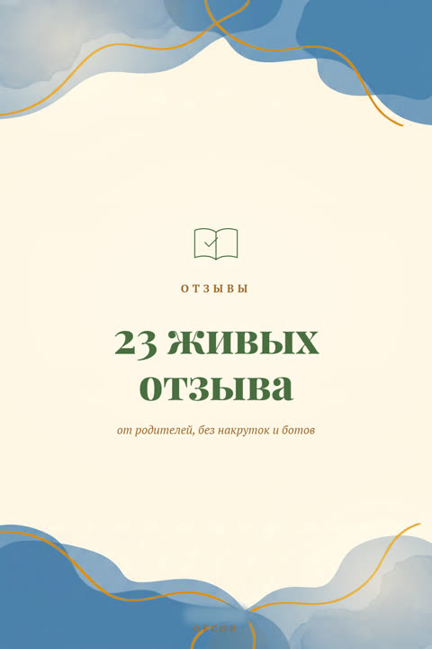
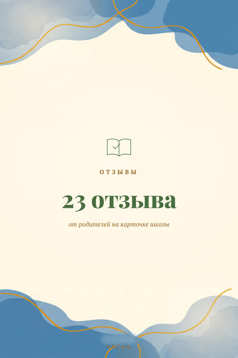
23 живых отзыва от родителей, без накруток и ботов
23 отзыва от родителей в карточке школы
Защитное «без накруток и ботов» возражение, которого никто не задавал. Число 23 проверяется перед заливкой.
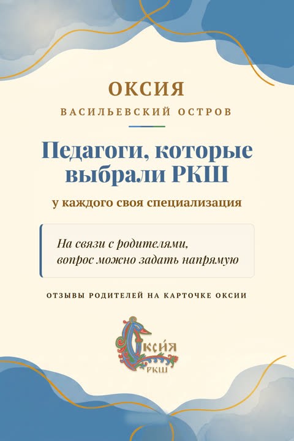
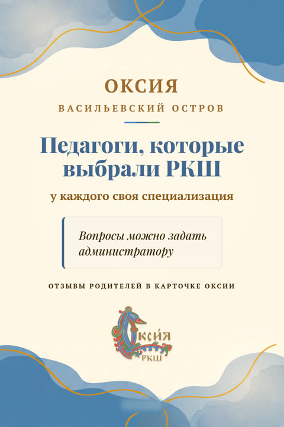
На связи с родителями, вопрос можно задать напрямую. Отзывы родителей на карточке ОКСИИ
Вопросы можно задать администратору. Отзывы родителей в карточке ОКСИИ
Согласовано со слайдом 36: вопросы идут администратору.
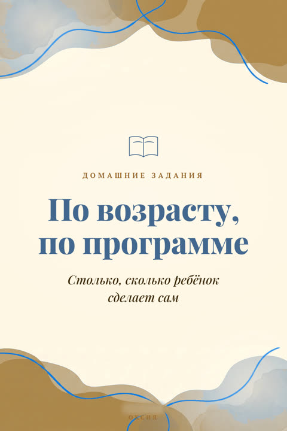
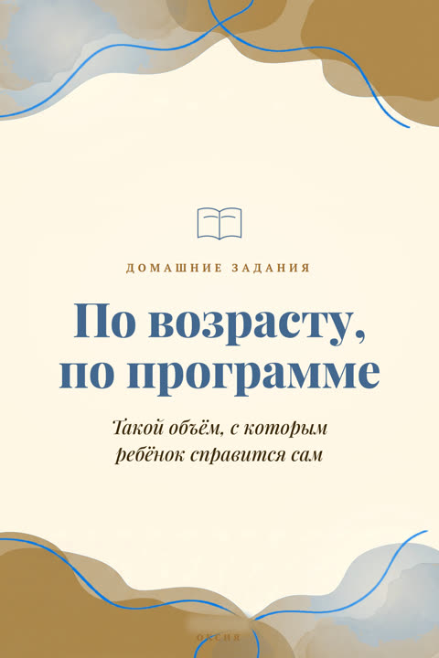
Столько, сколько ребёнок сделает сам
Такой объём, с которым ребёнок справится сам
«Столько, с чем» грамматически неверно: «столько» про количество и не сочетается с «чем».
2. Описания товаров
Лимиты Яндекса соблюдены: короткое описание до 250 знаков, полное до 3000. Порядок строк в файле уже обратный (флагман, Начальная школа, последней), потому что Яндекс переворачивает порядок при импорте.
В пакет вошли и финальные правки: согласование «для родителей, которые хотят», «фонематический слух», «с учётом», «бережными методами», «интерес к учёбе», «неразборчивый почерк». Рядом поправила то же самое согласование в Репетиторе («которым нужна») и Шахматах («которые уже играют»), и повтор «педагог» в коротком описании Начальной школы. В коротком описании Творческого чтения оставила «поступил ученик» без «сам», иначе «сам» снова повторялось бы дважды.
Творческое чтение · 1100 ₽
Убрано: «не к обязанности» (противопоставление), «которых хочется приучить» (о ком речь)
Интерес к чтению как к удовольствию, не к обязанности
Интерес к чтению: книгу хочется открыть самому
Для детей 6-10 лет, которых хочется мягко приучить к чтению без давления.
Для родителей, которые хотят приучить ребёнка 6-10 лет к чтению без давления.
и что сделал бы на его месте сам ребёнок.
и как бы на его месте поступил ученик.
Полный текст целиком (725 знаков) и короткое описание (179 знаков)
Творческое чтение для детей 6-10 лет Обсуждаем книгу, которую ребёнок выбрал сам. Чем это отличается от школьного чтения На уроке литературы важен пересказ по плану и правильный ответ. Здесь важно, что сам ребёнок думает о герое, согласен ли он с его поступком, что бы сделал на его месте. Что получает ребёнок - Интерес к чтению: книгу хочется открыть самому - Умение формулировать и отстаивать своё мнение - Кругозор шире школьного списка - Привычку читать по своему желанию Для кого Для родителей, которые хотят приучить ребёнка 6-10 лет к чтению без давления. Васильевский остров, 16-я линия, д. 7 +7 (921) 556-07-24, телефон, Telegram, MAX rksh-oksia.ru Творческое чтение для детей. Кружок чтения для детей СПб.
Короткое: Для детей 6-10 лет. Читаем и говорим о книге, которую ребёнок выбрал сам. Учимся объяснять своими словами, почему герой поступил именно так, и как бы на его месте поступил ученик.
Лепка из полимерной глины · 1100 ₽
Убрано: цитатное «я сделал это сам», «просто», «творческое переключение»
Работа с мелкими деталями напрямую связана с почерком и усидчивостью. А готовая поделка после каждого занятия даёт то самое чувство «я сделал это сам».
Мелкая работа руками тренирует аккуратность и усидчивость, которые пригодятся и при письме. А готовая поделка после каждого занятия показывает ребёнку: я сделал это сам.
Творческое переключение после школьных уроков
Возможность отдохнуть от школьных уроков
Для детей 7-13 лет, которым важно переключиться после школы или кто просто любит делать что-то руками.
Для детей 7-13 лет, которым нужно отвлечься после школы, и для тех, кто любит делать что-то руками.
Полный текст целиком (808 знаков) и короткое описание (179 знаков)
Лепка из полимерной глины для детей 7-13 лет Творческие занятия, где главным инструментом становятся руки ребёнка. Развивается мелкая моторика и терпение доводить начатое до конца. Чем это полезно Мелкая работа руками тренирует аккуратность и усидчивость, которые пригодятся и при письме. А готовая поделка после каждого занятия показывает ребёнку: я сделал это сам. Что получает ребёнок - Развитую мелкую моторику - Внимание к деталям - Готовую работу после каждого занятия - Возможность отдохнуть от школьных уроков Для кого Для детей 7-13 лет, которым нужно отвлечься после школы, и для тех, кто любит делать что-то руками. Васильевский остров, 16-я линия, д. 7 +7 (921) 556-07-24, телефон, Telegram, MAX rksh-oksia.ru Лепка для детей СПб. Лепка из полимерной глины для детей Васильевский остров.
Короткое: Лепка из полимерной глины для детей 7-13 лет. Руки заняты делом вместо телефона. После каждого занятия ребёнок уходит домой с готовой вещью, которую сделал сам от начала до конца.
Шахматы · 1100 ₽
Убрано: «Не разовая игра, а…», выдуманные турниры (в брифе их нет, убрано), «прямо переносится на учёбу»
Не разовая игра на выходных, а регулярные тренировки с понятным прогрессом.
Регулярные тренировки с понятным прогрессом: ребёнок видит, как растёт от занятия к занятию.
Просчитывать ходы наперёд, спокойно разбирать свою ошибку вместо того, чтобы расстраиваться, и держать концентрацию долго. Это прямо переносится на учёбу и контрольные.
Просчитывать ходы наперёд, спокойно разбирать свою ошибку и долго держать концентрацию. Эти навыки пригодятся на уроках и контрольных.
Возможность попробовать себя в турнирах
Привычку думать перед каждым ходом
Для детей 7-11 лет, кто уже играет и кто садится за доску впервые.
Для детей 7-11 лет, которые уже играют, и тех, кто садится за доску впервые.
Полный текст целиком (720 знаков) и короткое описание (172 знаков)
Шахматы для детей 7-11 лет Занятия с тренером на развитие логики и внимания. Регулярные тренировки с понятным прогрессом: ребёнок видит, как растёт от занятия к занятию. Чему учат шахматы, кроме самой игры Просчитывать ходы наперёд, спокойно разбирать свою ошибку и долго держать концентрацию. Эти навыки пригодятся на уроках и контрольных. Что получает ребёнок - Логическое мышление - Усидчивость - Спокойное отношение к проигрышу - Привычку думать перед каждым ходом Для кого Для детей 7-11 лет, которые уже играют, и тех, кто садится за доску впервые. Васильевский остров, 16-я линия, д. 7 +7 (921) 556-07-24, телефон, Telegram, MAX rksh-oksia.ru Шахматы для детей СПб. Шахматы для детей Васильевский остров.
Короткое: Шахматы для детей 7-11 лет. Тренер учит думать на два шага вперёд и спокойно переживать проигрыш, без слёз и обид на доску. Подходят и новичкам, и тем, кто уже играет дома.
Помощь школьникам (репетитор) · 1600 ₽
Убрано: «по-настоящему», «осознанное понимание», «снежный ком», «война за столом», «реально»
Для тех, кому нужно подтянуть школьную программу, без ежедневных скандалов из-за домашки.
Для тех, кому нужно подтянуть школьную программу, чтобы делать уроки спокойно, без ссор.
По-настоящему закрытые пробелы в знаниях
Закрытые пробелы в знаниях
Осознанное понимание темы
Тема понятна, и ребёнок может объяснить её сам
кому нужна регулярная поддержка
которым нужна регулярная поддержка
которая реально не понята, пока пробел не превратился в снежный ком. Домашка перестаёт быть войной за столом.
которая не понята, пока пробел не вырос. Домашка перестаёт заканчиваться слезами и ссорами.
Полный текст целиком (755 знаков) и короткое описание (170 знаков)
Репетитор по математике, русскому языку и чтению для детей 8-13 лет Для тех, кому нужно подтянуть школьную программу, чтобы делать уроки спокойно, без ссор. Как строится занятие Разбираем именно ту тему, которая не понята. Если пробел тянется с прошлой четверти, сначала закрываем его, потом идём дальше. Что получает ребёнок - Закрытые пробелы в знаниях - Уверенность на уроках - Тема понятна, и ребёнок может объяснить её сам - Самостоятельность в домашних заданиях Для кого Для родителей школьников 8-13 лет, которым нужна регулярная поддержка по основным предметам. Васильевский остров, 16-я линия, д. 7 +7 (921) 556-07-24, телефон, Telegram, MAX rksh-oksia.ru Репетитор для школьника СПб. Репетитор по математике ребёнку Васильевский остров.
Короткое: Математика, русский, чтение для школьников 8-13 лет. Разбираем именно ту тему, которая не понята, пока пробел не вырос. Домашка перестаёт заканчиваться слезами и ссорами.
Логопед · 2000 ₽
Убрано: сравнение с поликлиникой, «просто не работают», «позволяет», «конкретно», «не общая группа»
Индивидуальный график, без месяцев ожидания записи, как в районной поликлинике.
Индивидуальный график и запись без долгого ожидания.
Общие упражнения для группы с разными нарушениями просто не работают так же хорошо.
Общие упражнения для группы с разными нарушениями работают хуже.
Гибкий график позволяет заниматься чаще, пока идёт активная коррекция, и реже, когда результат уже закрепился.
При гибком графике можно заниматься чаще, пока идёт активная коррекция, и реже, когда результат уже закрепился.
грамотность письма позже
грамотность на письме
Уверенность говорить перед классом
Уверенность при ответах у доски
. Личный график, не общая группа. Работаем именно с тем звуком, который не даётся конкретно
по личному графику. Работаем именно с тем звуком, который не даётся
Полный текст целиком (950 знаков) и короткое описание (143 знаков)
Занятия с логопедом для детей от 3 до 10 лет Индивидуальный график и запись без долгого ожидания. Почему индивидуальный формат У каждого ребёнка свой звук, который не получается, и своя причина. Общие упражнения для группы с разными нарушениями работают хуже. При гибком графике можно заниматься чаще, пока идёт активная коррекция, и реже, когда результат уже закрепился. Что получает ребёнок - Чистое произношение - Развитый фонематический слух, от которого зависит грамотность на письме - Уверенность при ответах у доски - Своевременную коррекцию, ещё до школы Частый вопрос Может, само пройдёт с возрастом? Иногда да, но точно скажет только специалист после диагностики. Для кого Для родителей детей от 3 до 10 лет, которые заметили трудности с речью. Васильевский остров, 16-я линия, д. 7 +7 (921) 556-07-24, телефон, Telegram, MAX rksh-oksia.ru Логопед для детей СПб. Логопед Васильевский остров. Занятия с логопедом для дошкольников.
Короткое: Индивидуальные занятия с логопедом для детей от 3 до 10 лет по личному графику. Работаем именно с тем звуком, который не даётся вашему ребёнку.
Курсы по исправлению почерка и каллиграфии · 9900 ₽
Убрано: запутанная фраза про учителя и тетрадь, «закостенел»
Подходит и для тех, кто ставит красивый почерк с нуля, и для тех, у кого он уже сложился неровным, и учитель это отмечает в каждой тетради.
Подходит и тем, кто учится красиво писать с нуля, и тем, у кого почерк уже сложился неровным и учитель замечает это в тетрадях.
Разбираем проблемы: наклон, нажим, как соединяются буквы. Работаем именно с тем, что не получается у ребёнка.
Разбираем, что не получается именно у вашего ребёнка: наклон, нажим, соединения между буквами.
Нет, в 8-11 лет почерк ещё не закостенел.
Нет. В 8-11 лет почерк ещё можно исправить.
с трудным почерком
с неразборчивым почерком
Подходит и тем, кто только учится красиво писать, и тем, у кого почерк уже сложился неровным, и это заметно в тетрадях.
Подходит и тем, кто только учится писать красиво, и тем, у кого почерк уже сложился неровным.
Полный текст целиком (869 знаков) и короткое описание (174 знаков)
Курсы по исправлению почерка и каллиграфии 9 занятий для детей 8-11 лет. Подходит и тем, кто учится красиво писать с нуля, и тем, у кого почерк уже сложился неровным и учитель замечает это в тетрадях. Как проходит курс Разбираем, что не получается именно у вашего ребёнка: наклон, нажим, соединения между буквами. Что получает ребёнок - Разборчивый почерк - Меньше усталости от письма - Меньше замечаний в тетради и дневнике - Уверенность на контрольных Частый вопрос Может, уже поздно переучивать? Нет. В 8-11 лет почерк ещё можно исправить. Для кого Для детей 8-11 лет с неразборчивым почерком и для тех, кто хочет освоить каллиграфию как отдельный навык. Васильевский остров, 16-я линия, д. 7 +7 (921) 556-07-24, телефон, Telegram, MAX rksh-oksia.ru Каллиграфия для детей СПб. Курсы чистописания для детей. Исправление почерка ребёнка Васильевский остров.
Короткое: 9 занятий для детей 8-11 лет. Разбираем наклон, нажим, соединения между буквами. Подходит и тем, кто только учится писать красиво, и тем, у кого почерк уже сложился неровным.
Подготовка к школе для 4-летних детей · 6000 ₽
Убрано: «потому что по-другому не работает», «никаких… только», длинное «до того, как станет обязательным»
Без прописей и давления, ребёнок учится через игру, потому что в 4 года по-другому не работает.
Без прописей и давления: в 4 года ребёнок учится через игру.
Для родителей детей 4 лет, кто хочет начать рано
Для родителей детей 4 лет, которые хотят начать рано
Для четырёхлеток. Никаких прописей и давления, только игра. 4 занятия в месяц закладывают интерес к буквам и цифрам ещё до того, как это станет обязательным предметом в школе.
Для четырёхлеток. Без прописей и давления, всё в игре. 4 занятия в месяц закладывают интерес к буквам и цифрам задолго до школьных уроков.
Полный текст целиком (852 знаков) и короткое описание (138 знаков)
Подготовка к школе для детей 4 лет 4 занятия в месяц по методике РКШ. Без прописей и давления: в 4 года ребёнок учится через игру. Что входит Первые шаги в чтении и письме через игру. Ребёнок не отличает урок от игры и потому не боится ошибиться. Почему не рано В 4 года ребёнок уже способен удерживать внимание на коротком задании. Важнее формат: без давления, короткими блоками. Что получает ребёнок - Интерес к учёбе, который сохранится и в школе - Развитие речи и мелкой моторики - Опыт занятий в группе сверстников - Первый навык удерживать внимание без родителя рядом Для кого Для родителей детей 4 лет, которые хотят начать рано, но без нагрузки не по возрасту. Васильевский остров, 16-я линия, д. 7 +7 (921) 556-07-24, телефон, Telegram, MAX rksh-oksia.ru Подготовка к школе 4 года СПб. Ранняя подготовка к школе Васильевский остров.
Короткое: Для четырёхлеток. Без прописей и давления, всё в игре. 4 занятия в месяц закладывают интерес к буквам и цифрам задолго до школьных уроков.
Подготовка к школе для 5-летних детей · 8800 ₽
Убрано: страшилка «в 8 лет нужен логопед» (медицинская претензия без источника), «без пропуска этого возраста», «переучивать просто»
Большинство трудностей с грамотностью в начальной школе растёт именно отсюда. В 5 лет это легко скорректировать занятиями. В 8 лет для этого уже нужна помощь логопеда.
Многие трудности с грамотностью в начальной школе начинаются со слабого фонематического слуха. В 5 лет его можно подтянуть на занятиях, потом это даётся сложнее.
Для родителей детей 5 лет, кто хочет начать заранее
Для родителей детей 5 лет, которые хотят начать заранее
Развитую речь и слух на звуки
Развитую речь и фонематический слух
Без спешки, но и без пропуска этого возраста, пока переучивать ещё легко и просто.
Без спешки и без пробелов, которые потом приходится закрывать.
Развиваем речь, слух на звуки, первые буквы.
Развиваем речь, фонематический слух, первые буквы.
Полный текст целиком (792 знаков) и короткое описание (146 знаков)
Подготовка к школе для детей 5 лет 8 занятий в месяц по методике РКШ. Развиваем речь, фонематический слух, первые шаги в чтении и письме. Почему фонематический слух важен Многие трудности с грамотностью в начальной школе начинаются со слабого фонематического слуха. В 5 лет его можно подтянуть на занятиях, потом это даётся сложнее. Что получает ребёнок - Развитую речь и фонематический слух - Первые уверенные шаги в чтении и письме - Лёгкую адаптацию к занятиям в группе - Спокойный старт в школе через год Для кого Для родителей детей 5 лет, которые хотят начать заранее, без спешки в последний год перед школой. Васильевский остров, 16-я линия, д. 7 +7 (921) 556-07-24, телефон, Telegram, MAX rksh-oksia.ru Подготовка к школе 5 лет СПб. Дошкольная подготовка Васильевский остров.
Короткое: 8 занятий в месяц для пятилеток. Развиваем речь, фонематический слух, первые буквы. Без спешки и без пробелов, которые потом приходится закрывать.
Подготовка к школе для 6-7-летних детей · 8800 ₽
Убрано: правок нет
Полный текст целиком (1069 знаков) и короткое описание (183 знаков)
Подготовка к школе для детей 6-7 лет 8 занятий в месяц. Учим читать и писать по методике РКШ, с учётом того, что в 6 и 7 лет у детей разные возможности и разный темп. Формат Небольшая группа на Васильевском острове, 16-я линия, д. 7. Педагог успевает подойти к каждому ребёнку за одно занятие. Почему начинать сейчас Ребёнок, который приходит в 1 класс уже читающим, чувствует себя увереннее с первого дня. Легче даётся тому, кто уже знает, что такое формат урока и не боится поднять руку. Что получает ребёнок - Уверенное чтение и письмо к сентябрю - Привычку к учебному ритму - Первый опыт занятий в группе сверстников - Спокойный старт в первом классе Частый вопрос Ребёнок уже немного читает, не поздно ли? Нет, программа подстраивается под текущий уровень внутри группы. Для кого Для родителей будущих первоклассников рядом с домом на Васильевском острове. Васильевский остров, 16-я линия, д. 7 +7 (921) 556-07-24, телефон, Telegram, MAX rksh-oksia.ru Подготовка к школе Васильевский остров. Подготовка к школе 6 лет СПб. Подготовка к школе 7 лет СПб.
Короткое: Подготовка к школе для будущих первоклассников. Ребёнок начинает уверенно читать и писать, привыкает к формату урока. Небольшая группа на Васильевском острове, педагог рядом с каждым.
Начальная школа (семейные классы) · 39000 ₽
Убрано: опечатки «Даем/Ведем/ребенка» в тексте клиента, «Не гонимся… важнее», «персональное внимание»
Даем строго отобранную
Даём строго отобранную
Ведем индивидуально каждого ребенка
Ведём индивидуально каждого ребёнка
Выпускаем подготовленного мотивированного и довольного ребенка.
Выпускаем подготовленного, мотивированного и довольного ребёнка.
Не гонимся за тем, чтобы ребёнок побыстрее прошёл программу: важнее, чтобы всё, что он учит, укладывалось в голове и не пугало.
Главное, чтобы всё, что ребёнок учит, укладывалось в голове и не пугало.
Почему небольшой класс это важно
Почему важен небольшой класс
с учетом всех
с учётом всех
экологичными методами
бережными методами
сохраняя интерес учиться
сохраняя интерес к учёбе
Маленький класс до 12 человек, персональное внимание к каждому, никто не чувствует себя отстающим.
Маленький класс до 12 человек, на каждого хватает внимания, и никто не чувствует себя отстающим.
сохраняя интерес учиться
сохраняя интерес к учёбе
Полный текст целиком (1791 знаков) и короткое описание (247 знаков)
Семейные начальные классы на Васильевском острове Небольшой класс. Педагог знает каждого ребёнка лично. Учим по методике Русской Классической Школы (РКШ). Семейные классы на Васильевском острове по методике Русской классической школы. Высокий уровень образования бережными методами, без ущерба для детской психики. Даём строго отобранную и только необходимую информацию (не загружаем детскую память!). Ведём индивидуально каждого ребёнка с учётом всех его особенностей. Без лишних правил, готовых алгоритмов и формализма работаем на осознанность и понимание. Выпускаем подготовленного, мотивированного и довольного ребёнка. Как мы работаем Главное, чтобы всё, что ребёнок учит, укладывалось в голове и не пугало. Даём время разобраться в своём темпе, сохраняя интерес к учёбе. Что входит в программу Чтение, письмо, арифметика. Всё остальное строится на этой основе. Почему важен небольшой класс В классе на 25-30 человек педагог физически не успевает дойти до каждого за урок. У нас, если ребёнок чего-то не понял, разбираем сразу же, на месте, не откладываем на потом. При необходимости к занятиям подключаются логопед и психолог. Что получает ребёнок - Спокойную обстановку, без страха ошибиться - Внимание педагога лично к нему - Привычку рассуждать самостоятельно - Базу, которая пригодится на годы вперёд Частый вопрос Ребёнок потом сможет перейти в обычную школу? Да, программа соответствует ФГОС. Перевод в другую школу проходит без разрыва в знаниях. Для кого Для родителей на Васильевском острове, которым важно понимать, чему и как учат их ребёнка в школе. Васильевский остров, 16-я линия, д. 7 +7 (921) 556-07-24, телефон, Telegram, MAX rksh-oksia.ru Начальная школа Васильевский остров. Семейные классы для детей СПб. Частная начальная школа Васильевский остров.
Короткое: Семейные классы на Васильевском острове по методике Русской классической школы. Педагог ведёт каждого ребёнка в своём темпе, сохраняя интерес к учёбе. Маленький класс до 12 человек, на каждого хватает внимания, и никто не чувствует себя отстающим.
Знаки в описаниях (было → стало, после всех правок)
| Товар | Описание, лимит 3000 | Короткое, лимит 250 | Лимит |
|---|---|---|---|
| Творческое чтение | 728 → 725 | 182 → 179 | в норме |
| Лепка из полимерной глины | 798 → 808 | 179 → 179 | в норме |
| Шахматы | 732 → 720 | 172 → 172 | в норме |
| Помощь школьникам (репетитор) | 746 → 755 | 188 → 170 | в норме |
| Логопед | 1001 → 950 | 166 → 143 | в норме |
| Курсы по исправлению почерка и каллиграфии | 888 → 869 | 200 → 174 | в норме |
| Подготовка к школе для 4-летних детей | 883 → 852 | 175 → 138 | в норме |
| Подготовка к школе для 5-летних детей | 788 → 792 | 160 → 146 | в норме |
| Подготовка к школе для 6-7-летних детей | 1069 → 1069 | 183 → 183 | в норме |
| Начальная школа (семейные классы) | 1852 → 1791 | 249 → 247 | в норме |
3. Что я не смогла подтвердить сама (оставлено как есть)
| Что на слайдах | Откуда | Что делаю |
|---|---|---|
| «23 отзыва» (слайд 38) | Бриф от сентября. На карточке было 29 оценок, а отзывов может быть иначе. | Перед заливкой пересчитаю в кабинете. Если число другое, поправлю слайд за минуту. |
| «Занятие от 40 минут до полутора часов» (слайд 46) | В первом брифе было «до 2 часов», на слайде поправлено на 1,5. | Оставлено как на слайде («до полутора часов»): так утверждено 06.09, и во всех материалах карточки то же. В первом брифе было «до 2 часов», расхождение закрыто в пользу слайда. |
| «Обратная связь каждый день» (слайд 45), «Ответим в тот же день» (слайд 57) | Бриф и правки Натальи. | Оставлено, это её обещания. |
| «Лучшие гимназии, лицеи, школы городского набора» (слайд 19), «В стоимость входит продлёнка» (слайд 18) | Правки Натальи от 23.09. | Оставлено. |
| «От метро 840 метров» (слайд 54) | Бриф. Есть в черновике хаба. | Оставлено. |
4. План заливки
- Прайс. Файл
oksia_прайс_v3_загрузить-в-Яндекс.xlsxзаменяет весь прайс карточки (так работает загрузка). Сразу после: проверяю в кабинете цены, порядок и фото всех 10 позиций. - Истории. Все 6 обновляю: в кабинете может стоять версия до правок 23-24.09, это проверю при заливке. Старые удаляю по одной, новые создаю с кнопкой «Записаться» и ссылкой на форму. Загрузка из 10 файлов у Яндекса иногда берёт только обложку, тогда пересоздаю черновик. Порядок: Семейные классы, Подготовка, Доп. занятия, Педагоги, Как проходят, Как записаться.
- Проверка. Яндекс обновляет публичную карточку не сразу: прайс идёт медленнее Историй. Через пару часов проверяю карточку на Картах и пишу, что видно клиенту.
5. Критерий «готово»
- В кабинете 10 товаров с новыми описаниями и верными ценами.
- 6 Историй по 10 слайдов, обложки на месте, кнопка «Записаться» у каждой.
- Публичная карточка показывает новые тексты (или честно: «ждём модерацию», с датой).
Файлы для заливки лежат в папке «ОКСИЯ / финал-заливка-2026-11-12» (6 папок Историй + прайс).